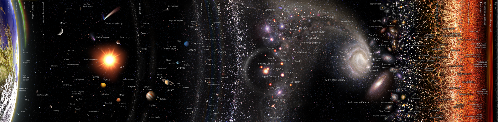
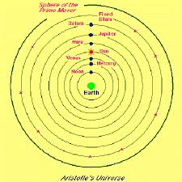

STARS AND UNIVERSE
- STARS
Introduction on stars
star, any massive self-luminous celestial body of gas that shines by radiation derived from its internal energy sources. Of the tens of billions of trillions of stars composing the observable universe, only a very small percentage are visible to the naked eye. Many stars occur in pairs, multiple systems, or star clusters. The members of such stellar groups are physically related through common origin and are bound by mutual gravitational attraction. Somewhat related to star clusters are stellar associations, which consist of loose groups of physically similar stars that have insufficient mass as a group to remain together as an organization. This article describes the properties and evolution of individual stars.Included in the discussion are the sizes, energetics, temperatures, masses, and chemical compositions of stars, as well as their distances and motions. The myriad other stars are compared with the Sun, strongly implying that “our” star is in no way special.

Stars formation and evolution
Throughout the Milky Way Galaxy (and even near the Sun itself), astronomers have discovered stars that are well evolved or even approaching extinction, or both, as well as occasional stars that must be very young or still in the process of formation. Evolutionary effects on these stars are not negligible, even for a middle-aged star such as the Sun. More massive stars must display more spectacular effects because the rate of conversion of mass into energy is higher. While the Sun produces energy at the rate of about two ergs per gram per second, a more luminous main-sequence star can release energy at a rate some 1,000 times greater. Consequently, effects that require billions of years to be easily recognized in the Sun might occur within a few million years in highly luminous and massive stars. A supergiant star such as Antares, a bright main-sequence star such as Rigel, or even a more modest star such as Sirius cannot have endured as long as the Sun has endured. These stars must have been formed relatively recently.
Birth of stars and evolution to the main sequence
Detailed radio maps of nearby molecular clouds reveal that they are clumpy, with regions containing a wide range of densities—from a few tens of molecules (mostly hydrogen) per cubic centimetre to more than one million. Stars form only from the densest regions, termed cloud cores, though they need not lie at the geometric centre of the cloud. Large cores (which probably contain subcondensations) up to a few light-years in size seem to give rise to unbound associations of very massive stars (called OB associations after the spectral type of their most prominent members, O and B stars) or to bound clusters of less massive stars. Whether a stellar group materializes as an association or a cluster seems to depend on the efficiency of star formation. If only a small fraction of the matter goes into making stars, the rest being blown away in winds or expanding H II regions, then the remaining stars end up in a gravitationally unbound association, dispersed in a single crossing time (diameter divided by velocity) by the random motions of the formed stars. On the other hand, if 30 percent or more of the mass of the cloud core goes into making stars, then the formed stars will remain bound to one another, and the ejection of stars by random gravitational encounters between cluster members will take many crossing times.
Low-mass stars also are formed in associations called T associations after the prototypical stars found in such groups, T Tauri stars. The stars of a T association form from loose aggregates of small molecular cloud cores a few tenths of a light-year in size that are randomly distributed through a larger region of lower average density. The formation of stars in associations is the most common outcome; bound clusters account for only about 1 to 10 percent of all star births. The overall efficiency of star formation in associations is quite small. Typically less than 1 percent of the mass of a molecular cloud becomes stars in one crossing time of the molecular cloud (about 5 106 years). Low efficiency of star formation presumably explains why any interstellar gas remains in the Galaxy after 1010 years of evolution. Star formation at the present time must be a mere trickle of the torrent that occurred when the Galaxy was young.

Summary of Stars
star, Any massive celestial body of gas that shines by radiant energy generated inside
it. The Milky Way Galaxy contains hundreds of billions of stars; only a very small
fraction are visible to the unaided eye. The closest star to Earth is the Sun. The
closest star to the Sun is about 4.2 light-years away; the most distant are in galaxies
billions of light-years away. Single stars such as the Sun are the minority; most
stars occur in pairs and multiple systems (see binary star). Stars also associate by
their mutual gravity in larger assemblages called clusters (see globular cluster;
open cluster). Constellations consist not of such groupings but of stars in the
same direction as seen from Earth. Stars vary greatly in brightness (magnitude),
colour, temperature, mass, size, chemical composition, and age. In nearly all, hydrogen
is the most abundant element. Stars are classified by their spectra (see spectrum),
from blue-white to red, as O, B, A, F, G, K, or M; the Sun is a spectral type G star.
Generalizations on the nature and evolution of stars can be made from correlations between
certain properties and from statistical results (see Hertzsprung-Russell diagram).
A star forms when a portion of a dense interstellar cloud of hydrogen and dust grains
collapses from its own gravity. As the cloud condenses, its density and internal
temperature increase until it is hot enough to trigger nuclear fusion in its core
(if not, it becomes a brown dwarf). After hydrogen is exhausted in the core from nuclear
burning, the core shrinks and heats up while the star’s outer layers expand significantly
and cool, and the star becomes a red giant. The final stages of a star’s evolution,
when it no longer produces enough energy to counteract its own gravity, depend
largely on its mass and whether it is a component of a close binary system (see black
hole; neutron star; nova; pulsar; supernova; white dwarf star). Some stars other than
the Sun are known to have one or more planets (see extrasolar planet). See also
Cepheid variable; dwarf star; eclipsing variable star; flare star; giant star;
Populations I and II; supergiant star; T Tauri star; variable star.
Introduction on universe
universe, the whole cosmic system of matter and energy of which Earth, and therefore the human race, is a part. Humanity has traveled a long road since societies imagined Earth, the Sun, and the Moon as the main objects of creation, with the rest of the universe being formed almost as an afterthought. Today it is known that Earth is only a small ball of rock in a space of unimaginable vastness and that the birth of the solar system was probably only one event among many that occurred against the backdrop of an already mature universe. This humbling lesson has unveiled a remarkable fact, one that endows the minutest particle in the universe with a rich and noble heritage: events that occurred in the first few minutes of the creation of the universe 13.7 billion years ago turn out to have had a profound influence on the birth, life, and death of galaxies, stars, and planets. Indeed, a line can be drawn from the forging of the matter of the universe in a primal “big bang” to the gathering on Earth of atoms versatile enough to serve as the basis of life. The intrinsic harmony of such a worldview has great philosophical and aesthetic appeal, and it may explain why public interest in the universe has always endured.

Earliest conceptions of the universe
All scientific thinking on the nature of the universe can be traced to the distinctive geometric patterns formed by the stars in the night sky. Even prehistoric people must have noticed that, apart from a daily rotation (which is now understood to arise from the spin of Earth), the stars did not seem to move with respect to one another: the stars appear “fixed.” Early nomads found that knowledge of the constellations could guide their travels, and they developed stories to help them remember the relative positions of the stars in the night sky. These stories became the mythical tales that are part of most cultures. When nomads turned to farming, an intimate knowledge of the constellations served a new function—an aid in timekeeping, in particular for keeping track of the seasons. People had noticed very early that certain celestial objects did not remain stationary relative to the “fixed” stars; instead, during the course of a year, they moved forward and backward in a narrow strip of the sky that contained 12 constellations constituting the signs of the zodiac. Seven such wanderers were known to the ancients: the Sun, the Moon, Mercury, Venus, Mars, Jupiter, and Saturn. Foremost among the wanderers was the Sun: day and night came with its rising and setting, and its motion through the zodiac signaled the season to plant and the season to reap. Next in importance was the Moon: its position correlated with the tides, and its shape changed intriguingly over the course of a month. The Sun and Moon had the power of gods; why not then the other wanderers? Thus probably arose the astrological belief that the positions of the planets (from the Greek word planetes, “wanderers”) in the zodiac could influence worldly events and even cause the rise and fall of kings. In homage to this belief, Babylonian priests devised the week of seven days, whose names even in various modern languages (for example, English, French, or Norwegian) can still easily be traced to their origins in the seven planet-gods.
|  |
Universe Summary
universe, Whole cosmic system of matter and energy of which Earth is a part. Its main constituents are the galaxies, within which are stars and stellar groupings and nebulae (see nebula). Earth’s Sun is one star among the billions of stars in the Milky Way Galaxy. All atoms, subatomic particles, and everything they compose are also part of the universe. The universe is governed by four fundamental forces: the strong force, the weak force, the electromagnetic force, and gravitation. Numerous theories have been proposed for the origin and structure of the universe. See also big bang; cosmology; expanding universe; steady-state theory.